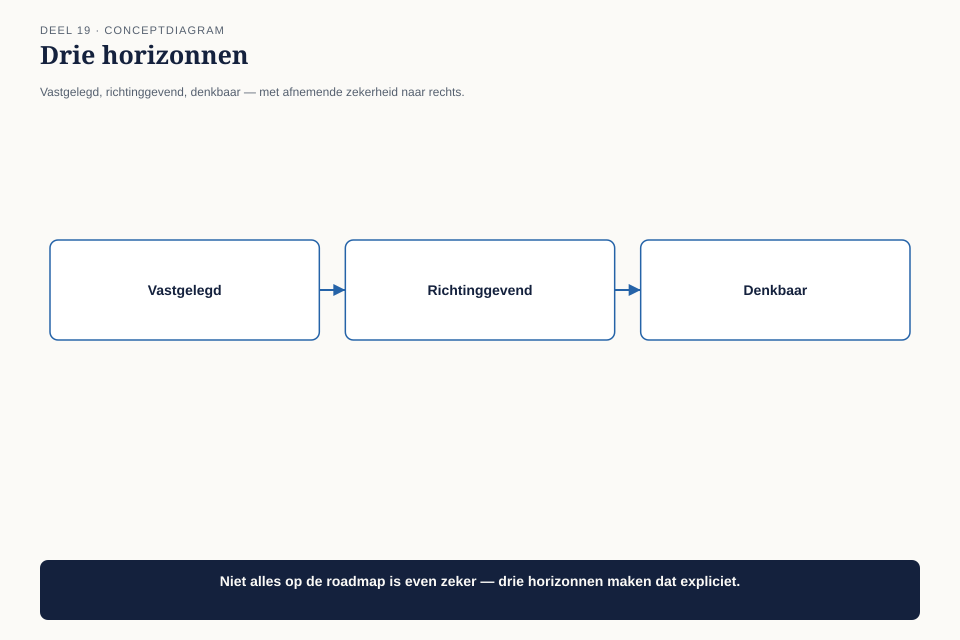
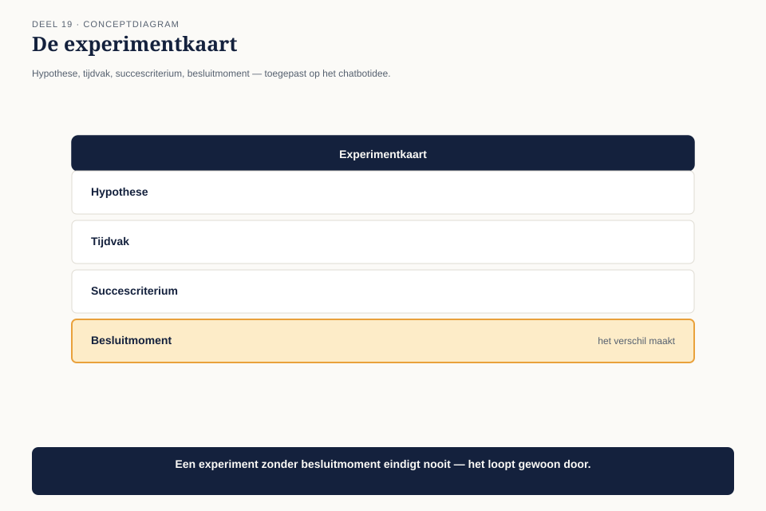
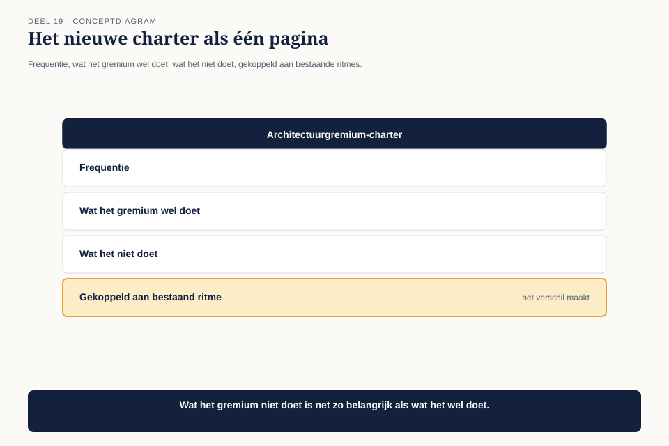

Deel 19 — Governance en roadmap
Niveau 2 — Engagement, waarde en specialisatie | Deelnemersreader BTABoK-cursus, Ductus — twee dagdelen
19.1 Waar dit deel over gaat
Dit is het deel waar deze cursus al sinds deel 1 naartoe werkt. Daar leerde je de BoK-tenet “bouw dingen en bezit dingen, bestuur geen dingen” — met de waarschuwing dat een architectuurgremium in een gereguleerde sector daar ongemakkelijk mee op gespannen voet kan staan. In deel 9 kreeg je een werkbaar onderscheid — kaders stellen versus ontwerpen — maar expliciet niet de definitieve oplossing. Dit deel geeft die oplossing, en voegt er twee praktische instrumenten aan toe: de roadmap en het experiment.
Aan het eind van dit deel kun je:
- uitleggen waarom architectuurgovernance moet veranderen zodra een project overgaat in een blijvend product;
- een roadmap opstellen met drie horizonnen, gekoppeld aan de investeringstypen en transformatiefasen die je al kent;
- een experiment opzetten voor een idee dat te onzeker is voor een gewoon besluit;
- een governancemodel ontwerpen dat kaders bewaakt zonder ontwerpen over te nemen.
19.2 Wat gebeurt er als het programma stopt?
Mutatieplatform loopt naar zijn einde: over twee maanden is de veertien maanden durende programmaperiode voorbij. Een vraag die niemand eerder had gesteld, komt nu met urgentie op tafel: wat gebeurt er met het architectuurgremium dat gedurende het programma is ontstaan?

Twee kampen vormen zich. Het ene kamp — met een verwijzing naar de BoK-tenet uit deel 1 — vindt dat het gremium moet ontbinden zodra het programma stopt: “We zijn geen bestuursorgaan, we zijn hier om dingen te bouwen. Als Mutatieplatform klaar is, is onze taak voorbij.” Het andere kamp wijst op de vijf systemen die na het programma blijven bestaan, en op de architectuur-dekkingsgraad van zestig procent uit deel 16: “Zonder doorlopende aandacht verwatert dit binnen een jaar. Wie bewaakt dan de kaders?”
Beide kampen hebben gelijk, en het probleem is dat ze het over twee verschillende dingen hebben zonder dat te beseffen.
19.3 Product versus project: de kern van de oplossing
De eerste competentie legt het onderscheid bloot dat de discussie in 19.2 verwart. Mutatieplatform was een project: tijdelijk, met een begin- en einddatum, gebouwd om iets op te leveren. De vijf systemen die het oplevert, zijn een product: blijvend, zonder einddatum, en ze bestaan lang nadat het project is afgerond.

Governance voor een project en governance voor een product zijn niet hetzelfde soort governance, en dat is waarom de discussie in 19.2 vastloopt. Projectgovernance gaat over de vraag “bouwen we het goede ding, op tijd, binnen budget” — een tijdelijke vraag die met het project verdwijnt. Productgovernance gaat over de vraag “blijft dit ding gezond, veilig en consistent” — een vraag die nooit stopt zolang het product bestaat.
| Projectgovernance | Productgovernance | |
|---|---|---|
| Duur | tijdelijk, eindigt met het project | doorlopend, geen einddatum |
| Vraag | bouwen we het goede ding, op tijd? | blijft het gezond, veilig, consistent? |
| Wat er gebeurt bij Mutatieplatform | eindigt over twee maanden — terecht | moet blijven bestaan — de vijf systemen leven door |
De oplossing: het architectuurgremium ontbindt niet, maar het charter verandert. Het kamp dat “bestuur geen dingen” aanhaalt, heeft gelijk over projectgovernance — die stopt terecht. Het kamp dat waarschuwt voor verwatering, heeft gelijk over productgovernance — die moet blijven, maar in een andere, lichtere vorm dan het programmagremium dat het was.
Dit lost de spanning uit deel 1 definitief op, niet door een van de twee kanten gelijk te geven, maar door te laten zien dat ze het over verschillende tijdshorizonnen hadden. Een architect bouwt en bezit dingen tijdens het project. Een architectuurpraktijk bewaakt het product erna — een andere rol, met een ander, lichter mandaat, precies zoals kaders stellen (deel 9) lichter is dan ontwerpen.
19.4 De roadmap: drie horizonnen
De tweede competentie geeft het nieuwe, lichte productgremium een instrument om vooruit te kijken zonder in projectplanning te vervallen: de roadmap.

Het instrument: de roadmapkaart, drie horizonnen.
| Horizon | Zekerheid | Wat erin staat | Koppeling |
|---|---|---|---|
| Vastgelegd | hoog — gefinancierd, gepland | verplichte en beschermende investeringen met een vaste datum | investeringsportefeuille (deel 16) |
| Richtinggevend | middel — waarschijnlijk, nog niet volledig uitgewerkt | renderende investeringen die aansluiten bij de volgende transformatiefase | transformatiefasen (deel 13) |
| Denkbaar | laag — een richting, geen belofte | optiescheppende investeringen en onderzochte experimenten | optiescheppend (deel 3, deel 16) |
Een roadmap met alleen de vastgelegde horizon is eigenlijk een planning, geen roadmap — hij vertelt niets over de richting. Een roadmap met alleen de denkbare horizon is een visiedocument zonder houvast. De waarde zit in alle drie tegelijk, met een zichtbaar afnemende zekerheid — iedereen die de roadmap leest, weet meteen welk deel een belofte is en welk deel een richting.
19.5 Experimenten: een derde weg naast wel of niet besluiten
De derde competentie geeft een antwoord op een probleem dat al in deel 13 opdook: het chatbotvoorstel van Team Communicatie werd toen vastgelegd met een heroverwegingsmoment (“zodra het programma de uitbreidingsfase bereikt”), maar niet uitgevoerd. Dat moment is nu aangebroken, en de vraag is hoe je een idee met een onzekere uitkomst behandelt zonder het meteen als volwaardig project te starten.

Het instrument: de experimentkaart. Vier velden:
| Veld | Inhoud | Bij het chatbotidee |
|---|---|---|
| Hypothese | wat we denken dat waar is, toetsbaar | “Een chatbotkanaal vermindert het aantal telefonische vragen over eenvoudige simulatiegevallen met minstens 15%” |
| Tijdvak | een vast, kort venster | zes weken, met een beperkte groep deelnemers |
| Succescriterium | het getal dat de hypothese bevestigt of weerlegt | 15% daling in telefonische vragen over de doelgroep |
| Besluitmoment | een vaste datum waarop wordt beslist: opschalen, aanpassen, of stoppen | zes weken na start, vastgelegd vóór het experiment begint |
Waarom dit anders is dan een gewoon project: een experiment heeft vanaf het begin een expliciet stoppunt en een vooraf afgesproken criterium om te stoppen. Dat voorkomt het patroon waarbij een idee eenmaal gestart, moeilijk meer te stoppen is omdat er al in is geïnvesteerd — dezelfde valkuil als bij technische schuld die nooit wordt afgelost (deel 16).
De uitkomst van het chatbotexperiment: een daling van elf procent, onder de vooraf afgesproken vijftien procent. Het experiment wordt niet opgeschaald, maar ook niet als mislukking behandeld — het besluitenlogboek legt vast wat wél is geleerd (welk deel van de vragen zich wél leende voor een chatbot) voor een mogelijke volgende poging.
19.6 Het nieuwe governancemodel
Claudette stelt, met de drie voorgaande competenties, een licht charter voor het architectuurgremium na Mutatieplatform voor:

- Frequentie: één keer per kwartaal, gekoppeld aan hetzelfde ritme als de klantreiskaart (deel 12) en de stakeholderkaart (deel 17) — één terugkerend moment, geen aparte kalenderafspraak.
- Wat het gremium wel doet: de roadmap bijwerken, de architectuur-dekkingsgraad (deel 16) beoordelen, en beslissen over experimenten die de denkbare horizon binnenkomen.
- Wat het gremium niet doet: individuele ontwerpkeuzes goedkeuren — dat blijft, zoals in deel 9 al vastgesteld, bij de teams.
Dit charter overtuigt beide kampen uit 19.2: het is geen permanent programmagremium dat blijft ontwerpen (het kamp dat “bestuur geen dingen” citeerde krijgt gelijk), en het laat de vijf systemen niet zonder toezicht achter (het andere kamp krijgt ook gelijk).
19.7 Kernbegrippen
| Begrip | Betekenis in deze cursus |
|---|---|
| Product versus project | een project is tijdelijk en eindigt; het product dat het oplevert, blijft bestaan en heeft een andere, lichtere, doorlopende governance nodig |
| Roadmapkaart | drie horizonnen — vastgelegd, richtinggevend, denkbaar — met afnemende zekerheid, gekoppeld aan investeringstypen en transformatiefasen |
| Experimentkaart | hypothese, tijdvak, succescriterium, besluitmoment — vooraf afgesproken, zodat een idee met een onzekere uitkomst niet stilzwijgend permanent wordt |
| Het definitieve governancemodel | een licht, kwartaalgebonden gremium dat kaders en roadmap bewaakt, nooit ontwerpt |
Volgende deel: deel 20 — Architectuurvolwassenheid. Een instrument dat op zichzelf staat: hoe volwassen is een architectuurpraktijk eigenlijk, langs vijf niveaus en vijf dimensies?